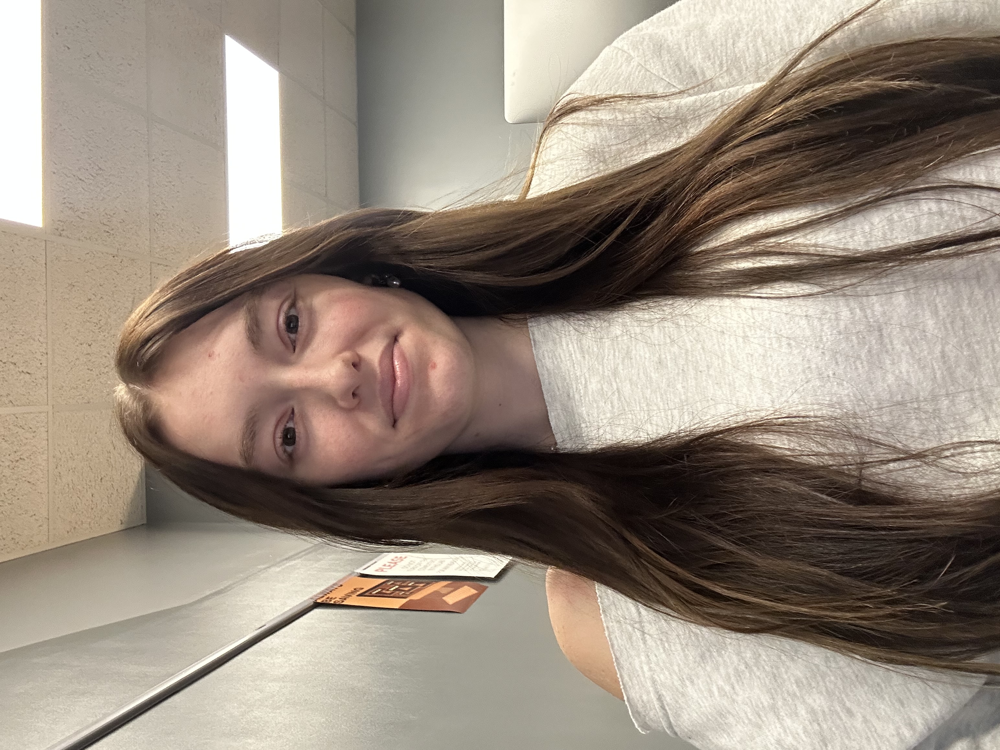
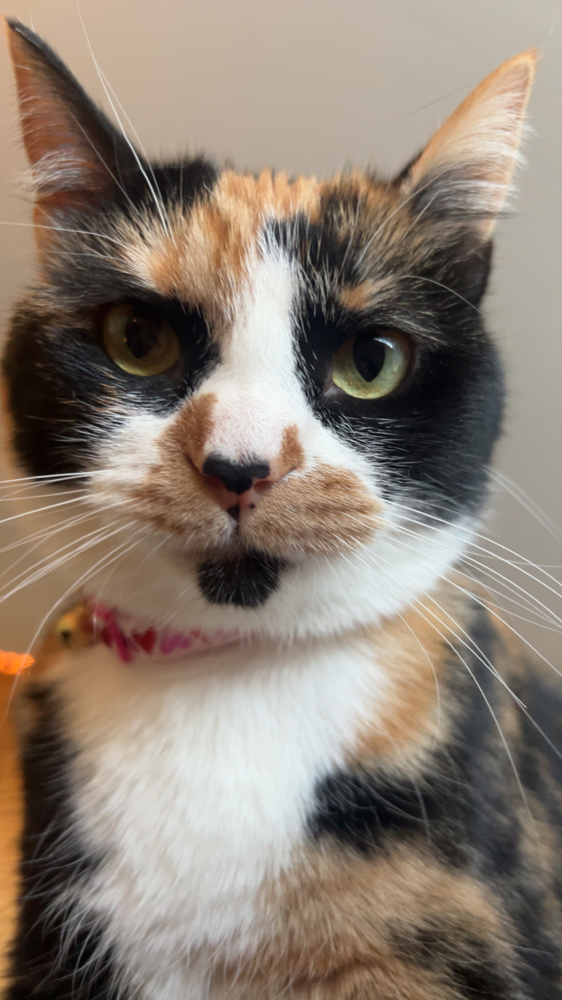

Hello! My name is Lexie Plochberger and this is my intro paragraph to my first ever website! I am a sophomore here at Columbia College and I am majoring in Graphic Design and minoring in Marketing. My freshman year of college, I went to Missouri Valley College in Marshall, MO. I played volleyball there and loved it, however the campus and location was just not for me, so I transferred to Columbia College for my sophomore year and unfortunately no longer play volleyball. Luckily, I have really liked it here at CC and I have made lots of friends as well! I also have a cat named Mocha and a dog named Mazie!
My Joke
I don't trust stairs... They are always up to something.

Click the image to email me!

Here is my cat, Mocha!